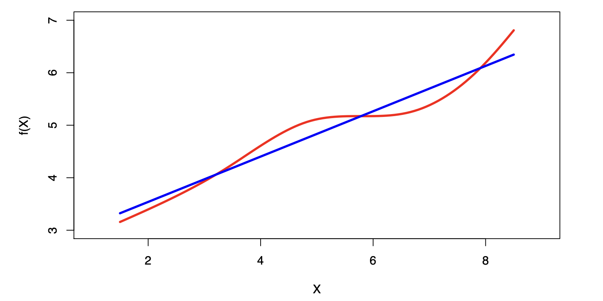
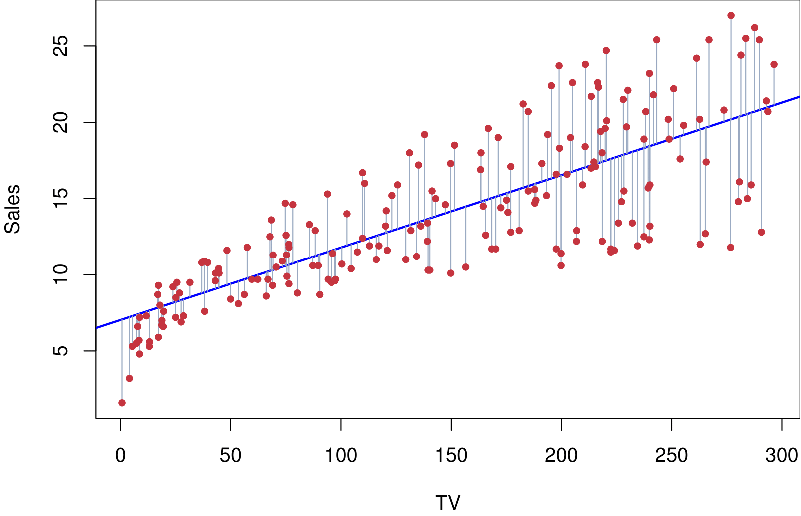
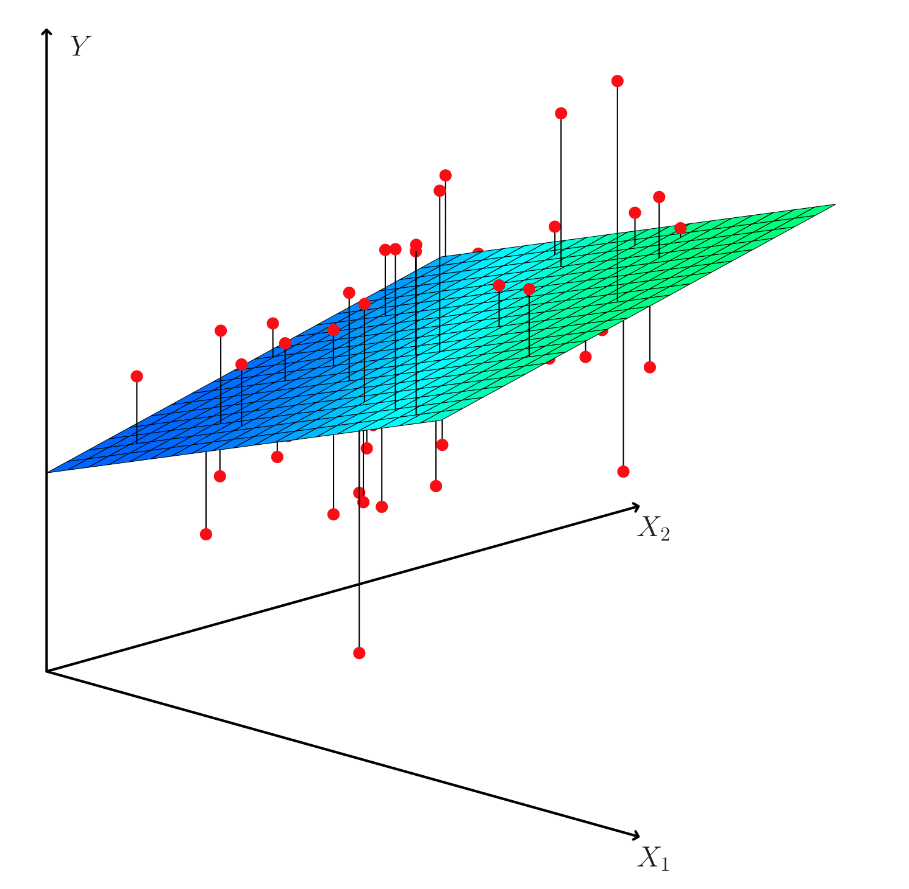
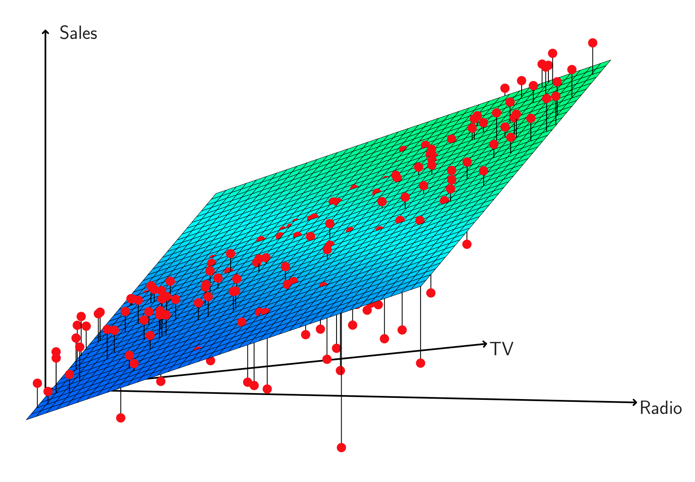
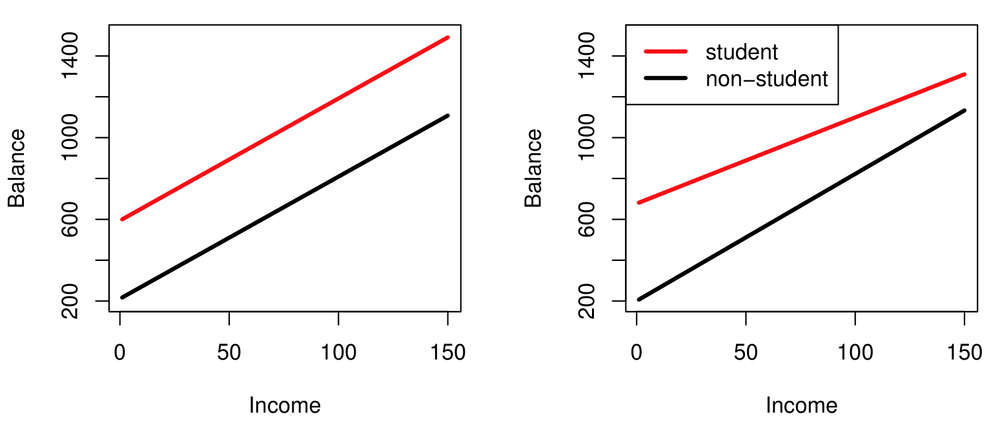
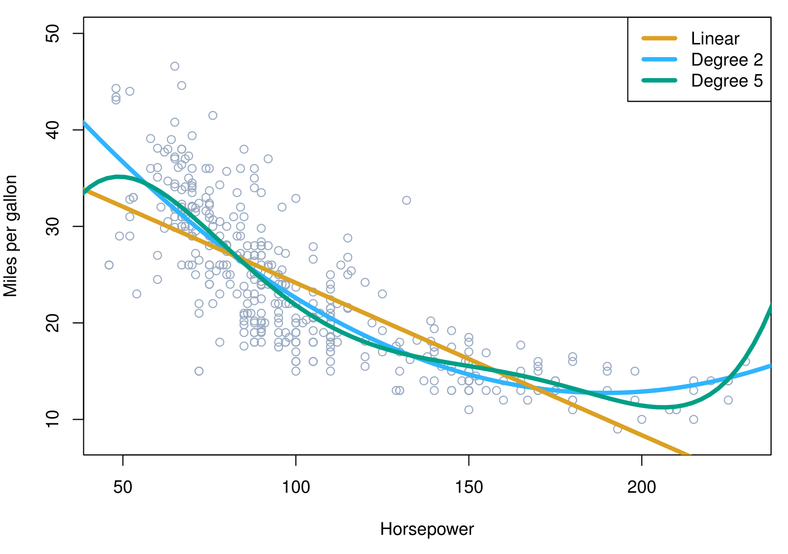

MGMT 47400: Predictive Analytics
Linear Regression
Overview
- XXXX
- XXX
XXX
XXX?
Linear Regression
Linear regression is a simple approach to supervised learning. It assumes that the dependence of \(Y\) on \(X_1, X_2, \ldots, X_p\) is linear.
True regression functions are never linear!
- Although it may seem overly simplistic, linear regression is extremely useful both conceptually and practically.
Linear Regression for the Advertising Data
Consider the advertising data shown:

Questions we might ask:
- Is there a relationship between advertising budget and sales?
- How strong is the relationship between advertising budget and sales?
- Which media contribute to sales?
- How accurately can we predict future sales?
- Is the relationship linear?
- Is there synergy among the advertising media?
Estimation of the parameters by least squares
Let \(\hat{y}_i = \hat{\beta}_0 + \hat{\beta}_1 x_i\) be the prediction for \(Y\) based on the \(i\)th value of \(X\). Then \(e_i = y_i - \hat{y}_i\) represents the \(i\)th residual.
We define the residual sum of squares (RSS) as:
\[ RSS = e_1^2 + e_2^2 + \cdots + e_n^2, \]
or equivalently as:
\[ RSS = (y_1 - \hat{\beta}_0 - \hat{\beta}_1 x_1)^2 + (y_2 - \hat{\beta}_0 - \hat{\beta}_1 x_2)^2 + \cdots + (y_n - \hat{\beta}_0 - \hat{\beta}_1 x_n)^2. \]
The least squares approach chooses \(\hat{\beta}_0\) and \(\hat{\beta}_1\) to minimize the RSS. The minimizing values can be shown to be:
\[ \hat{\beta}_1 = \frac{\sum_{i=1}^n (x_i - \bar{x})(y_i - \bar{y})}{\sum_{i=1}^n (x_i - \bar{x})^2}, \quad \hat{\beta}_0 = \bar{y} - \hat{\beta}_1 \bar{x}, \]
where \(\bar{y} \equiv \frac{1}{n} \sum_{i=1}^n y_i\) and \(\bar{x} \equiv \frac{1}{n} \sum_{i=1}^n x_i\) are the sample means.
Example: Advertising Data

The least squares fit for the regression of sales onto TV is shown. In this case a linear fit captures the essence of the relationship, although it is somewhat deficient in the left of the plot
Assessing the Accuracy of the Coefficient Estimates
- The standard error of an estimator reflects how it varies under repeated sampling:
\[ SE(\hat{\beta}_1)^2 = \frac{\sigma^2}{\sum_{i=1}^n (x_i - \bar{x})^2}, \quad SE(\hat{\beta}_0)^2 = \sigma^2 \left[ \frac{1}{n} + \frac{\bar{x}^2}{\sum_{i=1}^n (x_i - \bar{x})^2} \right]. \]
where \(\sigma^2 = Var(\epsilon)\)
- These standard errors can be used to compute confidence intervals. A 95% confidence interval is defined as a range of values such that with 95% probability, the range will contain the true unknown value of the parameter. It has the form:
\[ \hat{\beta}_1 \pm 2 \cdot SE(\hat{\beta}_1). \]
- There is approximately a 95% chance that the interval:
\[ \left[ \hat{\beta}_1 - 2 \cdot SE(\hat{\beta}_1), \hat{\beta}_1 + 2 \cdot SE(\hat{\beta}_1) \right] \]
will contain the true value of \(\beta_1\) (under a scenario where we obtained repeated samples like the present sample).
- For the advertising data, the 95% confidence interval for \(\beta_1\) is:
\[ [0.042, 0.053]. \]
Hypothesis Testing
- Standard errors can be used to perform hypothesis tests on coefficients.
The most common hypothesis test involves testing the null hypothesis:
\[ H_0: \text{There is no relationship between } X \text{ and } Y \] versus the alternative hypothesis:
\[ H_A: \text{There is some relationship between } X \text{ and } Y. \]
- Mathematically, this corresponds to testing:
\[ H_0: \beta_1 = 0 \] versus:
\[ H_A: \beta_1 \neq 0, \]
since if \(\beta_1 = 0\), then the model reduces to \(Y = \beta_0 + \epsilon\), and \(X\) is not associated with \(Y\).
Hypothesis Testing — Continued
- To test the null hypothesis (\(H_0\)), compute a \(t\)-statistic as follows:
\[ t = \frac{\hat{\beta}_1 - 0}{SE(\hat{\beta}_1)}. \]
The \(t\)-statistic follows a \(t\)-distribution with \(n - 2\) degrees of freedom under the null hypothesis (\(\beta_1 = 0\)).
Using statistical software, we can compute the \(p\)-value to determine the likelihood of observing a \(t\)-statistic as extreme as the one calculated.
Results for the Advertising Data
| Variable | Coefficient | Std. Error | t-statistic | p-value |
|---|---|---|---|---|
| Intercept | 7.0325 | 0.4578 | 15.36 | < 0.0001 |
| TV | 0.0475 | 0.0027 | 17.67 | < 0.0001 |
Assessing the Overall Accuracy of the Model
- Residual Standard Error (RSE):
\[ RSE = \sqrt{\frac{1}{n-2} RSS} = \sqrt{\frac{1}{n-2} \sum_{i=1}^n (y_i - \hat{y}_i)^2} \] where the Residual Sum of Square (RSS) is \(\sum_{i=1}^n (y_i - \hat{y})^2\).
- \(R^2\), the fraction of variance explained:
\[ R^2 = \frac{TSS - RSS}{TSS} = 1 - \frac{RSS}{TSS}, \quad TSS = \sum_{i=1}^n (y_i - \bar{y})^2 \] where TSS is the Total Sums of Squares.
- It can be shown that in this simple linear regression setting that \(R^2 = r^2\), where \(r\) is the correlation between X and Y:
\[ r = \frac{\sum_{i=1}^n (x_i - \bar{x})(y_i - \bar{y})}{\sqrt{\sum_{i=1}^n (x_i - \bar{x})^2 \sum_{i=1}^n (y_i - \bar{y})^2}} \]
Advertising Data Results
- Key metrics for model accuracy:
| Quantity | Value |
|---|---|
| Residual Standard Error | 3.26 |
| R² | 0.612 |
| F-statistic | 312.1 |
Multiple Linear Regression
- Here our model is
\[ Y = \beta_0 + \beta_1 X_1 + \beta_2 X_2 + \cdots + \beta_p X_p + \epsilon, \]
We interpret \(\beta_j\) as the average effect on \(Y\) of a one-unit increase in \(X_j\), holding all other predictors fixed.
In the advertising example, the model becomes
\[ \text{sales} = \beta_0 + \beta_1 \times \text{TV} + \beta_2 \times \text{radio} + \beta_3 \times \text{newspaper} + \epsilon. \]
Interpreting Regression Coefficients
- The ideal scenario is when the predictors are uncorrelated — a balanced design:
- Each coefficient can be estimated and tested separately.
- Interpretations such as “a unit change in \(X_j\) is associated with a \(\beta_j\) change in \(Y\), while all the other variables stay fixed” are possible.
- Correlations amongst predictors cause problems:
- The variance of all coefficients tends to increase, sometimes dramatically.
- Interpretations become hazardous — when \(X_j\) changes, everything else changes.
- Claims of causality should be avoided for observational data.
Two Quotes by Famous Statisticians
“Essentially, all models are wrong, but some are useful.”
— George Box
“The only way to find out what will happen when a complex system is disturbed is to disturb the system, not merely to observe it passively.”
— Fred Mosteller and John Tukey
Estimation and Prediction for Multiple Regression
- Given estimates ( _0, _1, , _p ), we can make predictions using the formula:
[ = _0 + _1x_1 + _2x_2 + + _px_p. ]
- We estimate ( _0, _1, , _p ) as the values that minimize the sum of squared residuals:
[ RSS = _{i=1}^n (y_i - i)^2 ] [ = {i=1}^n ( y_i - _0 - 1x{i1} - 2x{i2} - - px{ip} )^2. ]
- This is done using standard statistical software. The values ( _0, _1, , _p ) that minimize ( RSS ) are the multiple least squares regression coefficient estimates.

Results for Advertising Data
Regression Coefficients
| Predictor | Coefficient | Std. Error | t-statistic | p-value |
|---|---|---|---|---|
| Intercept | 2.939 | 0.3119 | 9.42 | < 0.0001 |
| TV | 0.046 | 0.0014 | 32.81 | < 0.0001 |
| radio | 0.189 | 0.0086 | 21.89 | < 0.0001 |
| newspaper | -0.001 | 0.0059 | -0.18 | 0.8599 |
Correlations
| Predictor | TV | radio | newspaper | sales |
|---|---|---|---|---|
| TV | 1.0000 | 0.0548 | 0.0567 | 0.7822 |
| radio | 1.0000 | 0.3541 | 0.5762 | |
| newspaper | 1.0000 | 0.2283 | ||
| sales | 1.0000 |
Some Important Questions
- Is at least one of the predictors \(X_1, X_2, \dots, X_p\) useful in predicting the response?
- Do all the predictors help to explain \(Y\), or is only a subset of the predictors useful?
- How well does the model fit the data?
- Given a set of predictor values, what response value should we predict, and how accurate is our prediction?
Is at Least One Predictor Useful?
For the first question, we can use the F-statistic:
\[ F = \frac{(TSS - RSS) / p}{RSS / (n - p - 1)} \sim F_{p, n-p-1} \]
| Quantity | Value |
|---|---|
| Residual Standard Error | 1.69 |
| \(R^2\) | 0.897 |
| F-statistic | 570 |
Deciding on the Important Variables
The most direct approach is called all subsets or best subsets regression:
Compute the least squares fit for all possible subsets.
Choose between them based on some criterion that balances training error with model size.
However, we often can’t examine all possible models since there are (2^p) of them.
For example, when (p = 40), there are over a billion models!
Instead, we need an automated approach that searches through a subset of them.
Forward Selection
- Begin with the null model — a model that contains an intercept but no predictors.
- Fit ( p ) simple linear regressions and add to the null model the variable that results in the lowest RSS.
- Add to that model the variable that results in the lowest RSS amongst all two-variable models.
- Continue until some stopping rule is satisfied:
- For example, when all remaining variables have a p-value above some threshold.
Backward Selection
- Start with all variables in the model.
- Remove the variable with the largest p-value — that is, the variable that is the least statistically significant.
- The new ((p - 1))-variable model is fit, and the variable with the largest p-value is removed.
- Continue until a stopping rule is reached:
- For instance, we may stop when all remaining variables have a significant p-value defined by some significance threshold.
Model Selection — Continued
We will discuss other criterias, including:
Mallow’s \(C_p\)
Akaike information criterion (AIC)
Bayesian information criterion (BIC)
Adjusted \(R^2\)
Cross-validation (CV)
Other Considerations in the Regression Model
Qualitative Predictors
Some predictors are qualitative, taking discrete values (e.g., gender, ethnicity).
Categorical predictors can be represented using factor variables.
Example:
- Qualitative variables: Gender, Student (Student Status), Status (Marital Status), Ethnicity.
Qualitative Predictors — Continued
Example: investigate differences in credit card balance between males and females, ignoring the other variables. We create a new variable:
[ x_i = \[\begin{cases} 1 & \text{if } i\text{th person is female} \\ 0 & \text{if } i\text{th person is male} \end{cases}\]]
Resulting model:
[ y_i = _0 + _1 x_i + _i = \[\begin{cases} \beta_0 + \beta_1 + \epsilon_i & \text{if } i\text{th person is female} \\ \beta_0 + \epsilon_i & \text{if } i\text{th person is male.} \end{cases}\]]
Interpretation?
Credit Card Data — Continued
Results for gender model:
| Predictor | Coefficient | Std. Error | t-statistic | p-value |
|---|---|---|---|---|
| Intercept | 509.80 | 33.13 | 15.389 | < 0.0001 |
| Gender [Female] | 19.73 | 46.05 | 0.429 | 0.6690 |
Qualitative Predictors with More Than Two Levels
With more than two levels, we create additional dummy variables.
- For example, for the
ethnicityvariable, we create two dummy variables:
$$
\[ x_{i2} = \begin{cases} 1 & \text{if i-th person is Caucasian} \\ 0 & \text{if i-th person is not Caucasian} \end{cases} \]
Qualitative Predictors Continued
- Both variables can be used in the regression equation to obtain the model:
\[ y_i = \beta_0 + \beta_1 x_{i1} + \beta_2 x_{i2} + \epsilon_i \]
Where:
\(\beta_0 + \beta_1 + \epsilon_i\): if \(i\)-th person is Asian
\(\beta_0 + \beta_2 + \epsilon_i\): if \(i\)-th person is Caucasian
\(\beta_0 + \epsilon_i\): if \(i\)-th person is African American (baseline)
Note: There will always be one fewer dummy variable than the number of levels. The level with no dummy variable — African American (AA) in this example — is known as the baseline.
Results for Ethnicity
| Term | Coefficient | Std. Error | t-statistic | p-value |
|---|---|---|---|---|
| Intercept | 531.00 | 46.32 | 11.464 | < 0.0001 |
| ethnicity[Asian] | -18.69 | 65.02 | -0.287 | 0.7740 |
| ethnicity[Caucasian] | -12.50 | 56.68 | -0.221 | 0.8260 |
Extensions of the Linear Model
Removing the additive assumption: interactions and nonlinearity
Interactions:
- In our previous analysis of the Advertising data, we assumed that the effect on sales of increasing one advertising medium is independent of the amount spent on the other media.
- For example, the linear model:
[ = _0 + _1 + _2 + _3 ]
states that the average effect on sales of a one-unit increase in TV is always (_1), regardless of the amount spent on radio.
Interactions — continued
But suppose that spending money on radio advertising actually increases the effectiveness of TV advertising, so that the slope term for TV should increase as radio increases.
In this situation, given a fixed budget of $100,000, spending half on radio and half on TV may increase sales more than allocating the entire amount to either TV or radio.
In marketing, this is known as a synergy effect, and in statistics, it is referred to as an interaction effect.
Interaction in Advertising Data

- When levels of TV or radio are low, true sales are lower than predicted.
- Splitting advertising between TV and radio underestimates sales.
Modeling Interactions
- Model takes the form:
$$
= _0 + _1 + _2 + _3 ( ) +
$$
| Term | Coefficient | Std. Error | t-statistic | p-value |
|---|---|---|---|---|
| Intercept | 6.7502 | 0.248 | 27.23 | < 0.0001 |
| TV | 0.0191 | 0.002 | 12.70 | < 0.0001 |
| radio | 0.0289 | 0.009 | 3.24 | 0.0014 |
| TV × radio | 0.0011 | 0.000 | 20.73 | < 0.0001 |
Interpretation
- The results in this table suggest that interactions are important.
- The p-value for the interaction term TV × radio is extremely low, indicating that there is strong evidence for ( H_A : _3 ).
- The ( R^2 ) for the interaction model is 96.8%, compared to only 89.7% for the model that predicts sales using TV and radio without an interaction term.
- This means that ( (96.8 - 89.7)/(100 - 89.7) = 69% ) of the variability in sales that remains after fitting the additive model has been explained by the interaction term.
- The coefficient estimates in the table suggest that an increase in TV advertising of $1,000 is associated with increased sales of
[ (_1 + _3 ) = 19 + 1.1 . ] - An increase in radio advertising of $1,000 will be associated with an increase in sales of
[ (_2 + _3 ) = 29 + 1.1 . ]
Hierarchy
Sometimes it is the case that an interaction term has a very small p-value, but the associated main effects (in this case, TV and radio) do not.
The hierarchy principle:
- If we include an interaction in a model, we should also include the main effects, even if the p-values associated with their coefficients are not significant.
Hierarchy — Continued
- The rationale for this principle is that interactions are hard to interpret in a model without main effects — their meaning is changed.
- Specifically, the interaction terms also contain main effects, if the model has no main effect terms.
Interactions Between Qualitative and Quantitative Variables
Consider the Credit data set, and suppose that we wish to predict balance using income (quantitative) and student (qualitative).
Without an interaction term, the model takes the form:
\[ \text{balance}_i \approx \beta_0 + \beta_1 \times \text{income}_i + \begin{cases} \beta_2 & \text{if } i^\text{th} \text{ person is a student} \\ 0 & \text{if } i^\text{th} \text{ person is not a student} \end{cases} \]
\[ = \beta_1 \times \text{income}_i + \begin{cases} \beta_0 + \beta_2 & \text{if } i^\text{th} \text{ person is a student} \\ \beta_0 & \text{if } i^\text{th} \text{ person is not a student} \end{cases} \]
With Interactions, It Takes the Form
\[ \text{balance}_i \approx \beta_0 + \beta_1 \times \text{income}_i + \begin{cases} \beta_2 + \beta_3 \times \text{income}_i & \text{if student} \\ 0 & \text{if not student} \end{cases} \]
\[ = \begin{cases} (\beta_0 + \beta_2) + (\beta_1 + \beta_3) \times \text{income}_i & \text{if student} \\ \beta_0 + \beta_1 \times \text{income}_i & \text{if not student} \end{cases} \]
Visualizing Interactions

- Left: no interaction between
incomeandstudent. - Right: with an interaction term between
incomeandstudent.
Non-linear effects of predictors
Polynomial regression on Auto data

Non-linear regression results
- The figure suggests that
\[ mpg = \\beta_0 + \\beta_1 \\times horsepower + \\beta_2 \\times horsepower^2 + \\epsilon \]
may provide a better fit.
| Coefficient | Std. Error | t-statistic | p-value | |
|---|---|---|---|---|
| Intercept | 56.9001 | 1.8004 | 31.6 | < 0.0001 |
| horsepower | -0.4662 | 0.0311 | -15.0 | < 0.0001 |
| horsepower^2 | 0.0012 | 0.0001 | 10.1 | < 0.0001 |
What we did not cover
- Outliers
- Non-constant variance of error terms
- High leverage points
- Collinearity
Generalizations of the Linear Model
In much of the rest of this course, we discuss methods that expand the scope of linear models and how they are fit:
Classification problems: logistic regression, support vector machines.
Non-linearity: kernel smoothing, splines, generalized additive models; nearest neighbor methods.
Interactions: Tree-based methods, bagging, random forests, boosting (these also capture non-linearities).
Regularized fitting: Ridge regression and lasso.
Summary
Summary
- XXXX
- XXXX